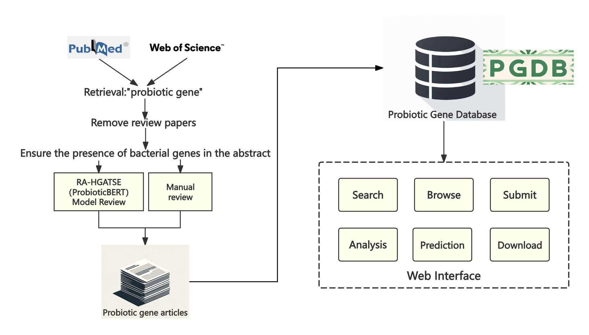

PGDB: Probiotic Gene Database.
In the current version, there are a total of 286 probiotic gene data, all from relevant research literature.

Figure 1 shows the entire process of data collection, data filtering, database establishment, and website establishment.
(i) Collect data, search for "probiotic gene" keywords on PubMed and Web of Science, remove review papers, and ensure that the articles contain bacterial gene names. Combine the two parts of the data and obtain accurate probiotic gene literature data through two types of review: BIOBERT model judgment and manual review.
(ii) Establish a database that includes a total of 13 fields, namely gene_id, article_title, abstract, unique_id, sequence_source, gene_name, function_description, species, exact_strain, doi, amino_acid_sequence, nucleotide_sequence, Strict. The field content comes from Uniprot, NCBI, and ENA (European Nucleotide Archive).
(iii) Establish a website to enable browsing, searching (using the four fields of genename, functiondescription, specifications, and doi), submitting data, analyzing, and downloading.
If you have any questions or suggestions about the PGDB, do not hesitate to contact us.